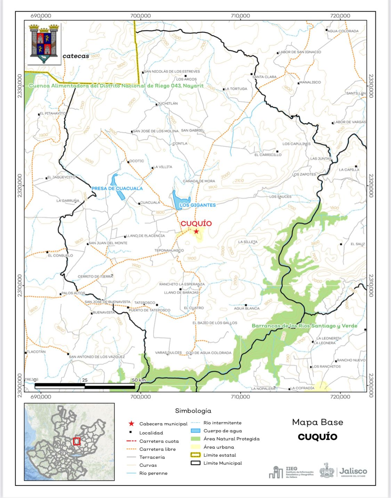
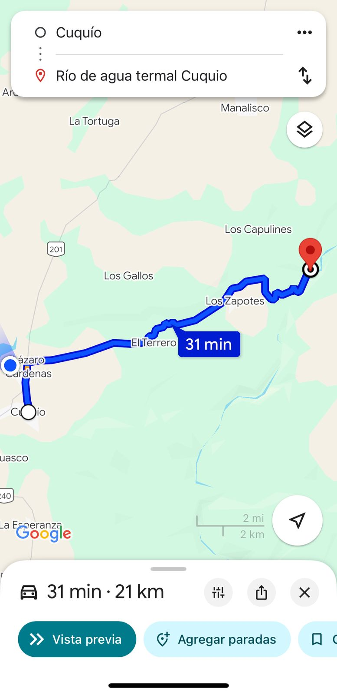
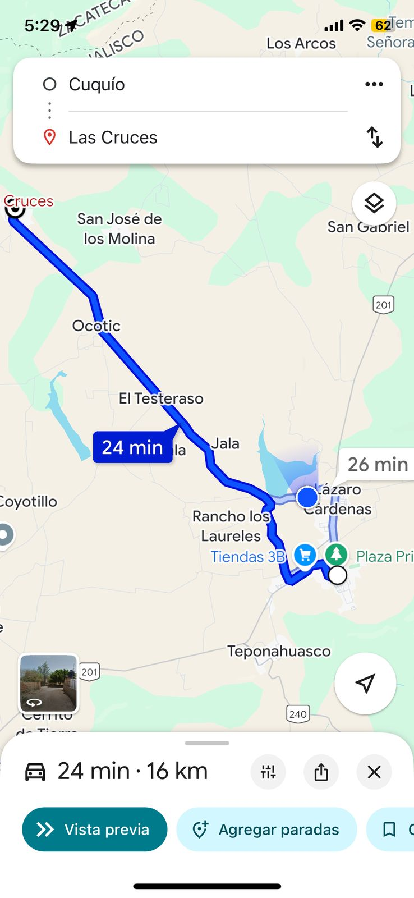
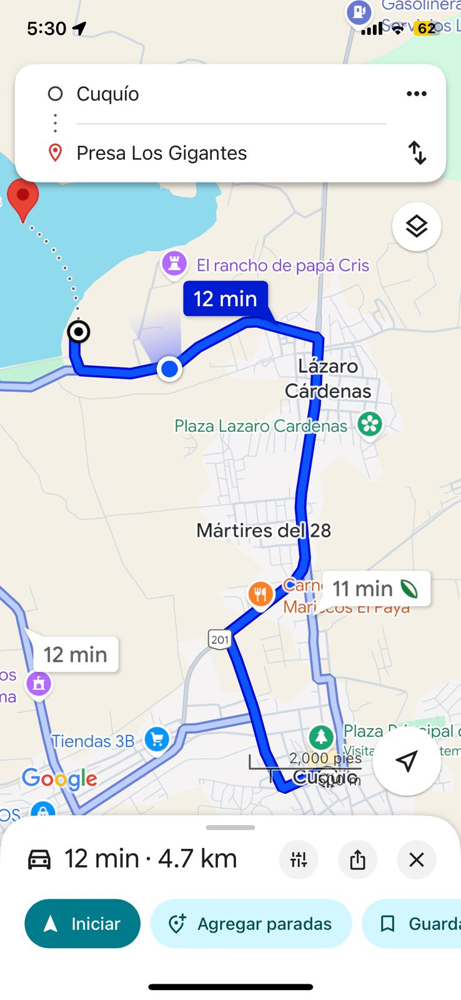

Rio Verde

Las Cruces

Presa los gigantes

Lugares de Comida
Todos los lugares de comida que se mencionan en la sección de Gastronomía se encuentran en el centro del pueblo, en el Mercado Municipal, por la calle principal y a un costado del jardin.